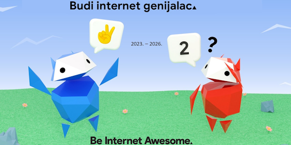
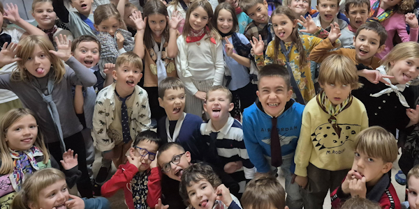
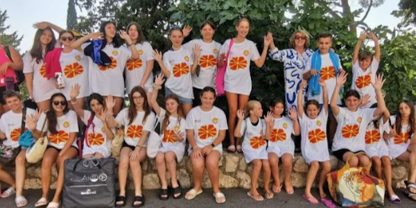
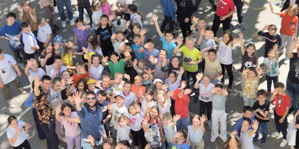
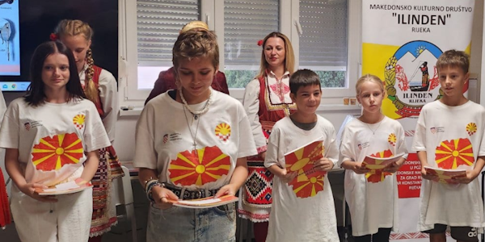
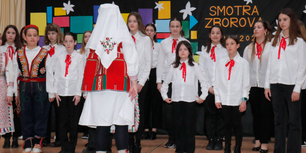
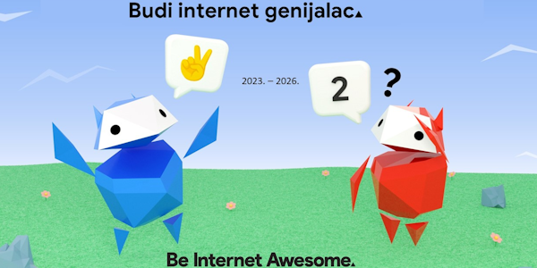
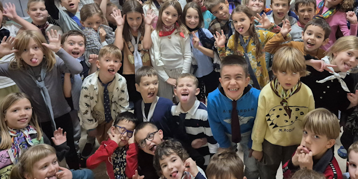
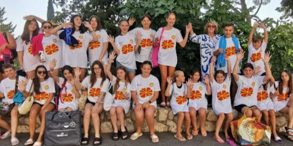
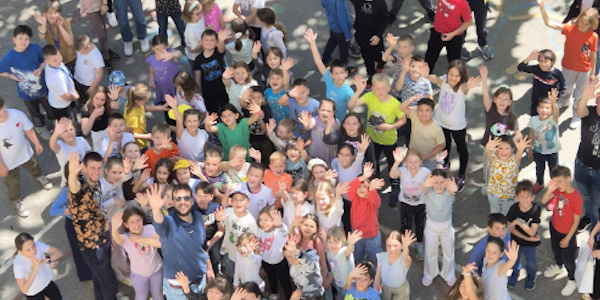
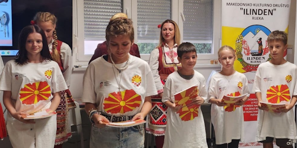
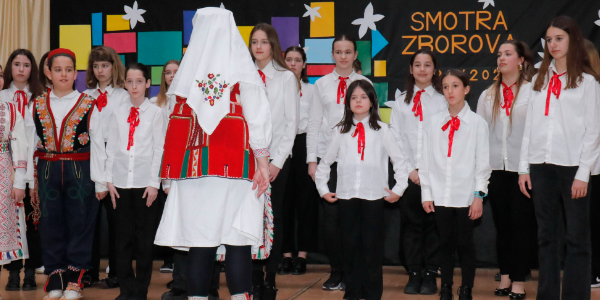
Obavijesti - Proslave
Proslave obuhvaćaju događaje koji obilježavaju važne datume i tradicije kroz zajedničke aktivnosti u školi.
U Osnovnoj školi obilježen Dan planeta Zemlje
Povodom obilježavanja Dana planeta Zemlje, u petak, 22.4.2016. godine, učitelji i učenici nižih razreda naše Škole su organizirali akciju čišćenja okoliša Škole.
Tako su dječica svojim trudom i voljom doprinijela čistoći okoliša i poručila svima kako je važno čuvati i voljeti svoj planet jer nam je on jedini dom.
Mladi za mlade u igri i zdravlju
U Osnovnoj školi obilježen Dan obitelji u organizaciji Začretskih mažoretkinja.
U sklopu projekta Mladi za mlade Začretske mažoretkinje su u suradnji s DND-om Sveti Križ Začretje organizirale program pod naslovom Mladi za mlade u igri i zdravlju.
U programu su sudjelovale Začretske mažoretkinje, Mali folklor KUD-a Sveti Križ Začretje, dječji zbor Cvrkutići i Puhački orkestar Pačetanci.
Obilježen Dan sigurnijeg interneta
Svake veljače udruženje Insafe/INHOPE uz potporu Europske Komisije organizira Dan Sigurnijeg Interneta kojemu je cilj promicanje sigurnije i odgovornije upotrebe online tehnologije i mobilnih uređaja, posebice među djecom i mladima.
Svake godine na drugi dan drugog tjedna drugog mjeseca tisuće ljudi diljem svijeta se udruže kako bi sudjelovali u događajima i aktivnostima kojima žele podići svijest o sigurnosnim problemima na internetu.
S tim je ciljem pedagog Dominik Ribičić održao pedagoške radionice u 5. i 6. razredima na temu „Internet – prednosti i opasnosti“ te 7. i 8. razredima na temu „Govor mržnje – kako ga prepoznati i reagirati?“.
Poseban dan, naš Dan škole
Obilježavanje Dana škole poseban je događaj u životu svake škole. Dan je to kojemu se vesele učenici i djelatnici Osnovne škole Novska.
Slavlje započinje zajedničkim plesom u gradskom parku. S obzirom da je ples neizostavan dio svake proslave, a Svjetski dan plesa vezan uz datum rođendana škole, zajedničko obilježavanje tih dana činilo nam se kao dobra ideja.